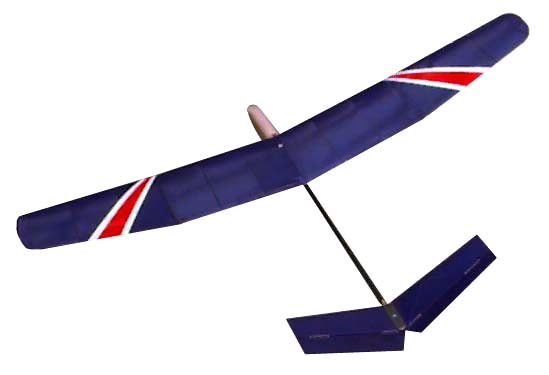

Construction is conventional balsa and super glue, with some composites for strengthening. Carbon strips on the leading and trailing edges, as well as capstrips on the ribs. The spar is balsa with kevlar and carbon capstrips, dihedral joiners and spar wrapping. While adding this reinforcement added a bit of time to the project, the weight gain was minimal, and the strength was enhanced beyond my wildest expectations. The fuse is finished with a single layer of 3/4 oz glass cloth and thin Cya. Covering on the flying surfaces is transparent blue Micafilm with Balsaloc. Color trim is Monokote. As an interesting note, the Monokote trim, at 3.5 grams, increased the weight of the covering by 41%. Something to be noticing when covering smaller models. The airfoil is the S4083. It is the first time I have used this airfoil, but so far I am very pleased.
Copyright 1998-99, Thayer Syme. All rights reserved